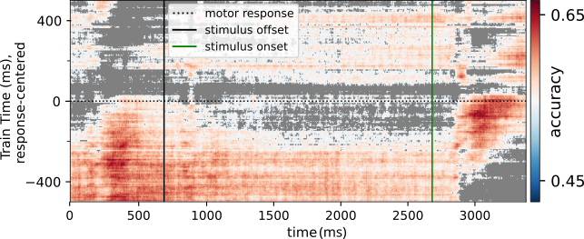

Reconceptualizing neural function as
high-dimensional brain state dynamics
Adina Wagner, M.Sc.
 mas.to/@adswa
mas.to/@adswa |
|
|
Institute for Experimental Psychology,
HHU Düsseldorf Psychoinformatics lab, Institute of Neuroscience and Medicine, Brain & Behavior (INM-7) Research Center Jülich |
|
Consider an example

|

|
|

|
Delayed Decision Making
Mental representations
Dynamic population codes represent working memory content.


(adapted from Meyers, 2018)
This can be reconceptualized as trajectories in a high-dimensional space.
Investigating these trajectories during decision making might reveal underlying brain states and their transitions.
Project outline

- Assumption:
- When the same event is experienced, exact brain activity may differ anatomically, but should correspond to similar cognitive processes.
- Idea:
- To functionally align different brain activity, we align the vector representations of the signals.
- Aim:
- Assign meaning to the axis of the shared space.
Study and data overview
|

|
The Shared response model (SRM)
Each recording's $i$'s data is a matrix of dimensions sensors $\times$ time-points $X_i$.
SRM (Chen et al., 2015)
models neural responses as a recording-specific base $W_i$
and shared components over all recordings' responses $S$.
SRM identifies common activity patterns across recordings (e.g., participants), and provides a
method
to transform activity into a lower-dimensional shared latent component space.
\[\begin{aligned} min_{w_i, s}\sum_i{\|X_i - W_iS \|}^2_F \\ s.t. W^T_iW_i = I_k \end{aligned} \]

SRM Simulation


A shared response model fit on this data can recover the hidden signal
well:
The shared components contain the signal.
The weights used in subject-specific signal generation show a
high correlation to the subject-specific transformation bases.
Transforming raw signal into the shared space yields
consistent components resembling the signal.
SRM Simulation


...the signal recovery is impeded:
Components capture mixed and partial signals.
There is overall no clear relationship between model weights and ground truth.
Across subjects, different components capture the signal.
This would impede a consistent interpretation of latent factors.
A spectral variant of the SRM
Transforming data into a power spectrum prior to SRM removes timing offsets.
Subject bases can then transform unseen time-resolved data
into a time-resolved shared space.


Model weights recover the signal weights consistently.
These transformations consistently reconstruct the signal in the same components.
Analysis overview
|
Trustworthy research needs data management
- Domain-agnostic command-line tool, built on top of Git & Git-annex
- 10+ year open source project (100+ contributors), available for all major OS
- Major features:
- Version-controlling arbitrarily large content
- Version control data & software alongside to code
- Transport mechanisms for sharing, updating & obtaining data
- Consume & collaborate on data (analyses) like software
- (Computationally) reproducible data analysis
- Track and share provenance of all digital objects
Research Data Management: Conceptual work
|
"The goal of Research Objects is to create a class of artefacts that can encapsulate our digital knowledge and provide a mechanism for sharing and discovering assets of reuseable research and scientific knowledge." |
"A stable actionable unit that bundles sufficient information to allow reliable interpretation and processing of contained data. PIDs and metadata of FDOs are open; access to FDO content may be subject to authentication." |
Research Data Management: Conceptual work
Exhaustively Versioned
Actionable Metadata
Modular structures for reuse
Portable, self-contained units
Reusable


Research Data Management: Technical solutions


|
Research data management: Education
| Availability correlates with software popularity |
~3 times higher web traffic than technical documentation |

Behavioral Analyses
Better-than-chance performance; Consecutive evaluation starting with either of the stimulus properties aligns best with participants' actual performance.
| Random choice | Magnitude-based | Probability-based |
| Expected-Value-based | Magnitude-then-probability-based | Probability-then-magnitude-based |
Top row: Participants actual performance; Bottom row: Simulated strategy
(last two panels have no random element and yield single, fixed value).
Latent components capture some features
The shared space contains information about some trial properties,
e.g., motor response or left vs. right visual stimulation.
Decision phase
Delay phase
But no direct mapping to stimulus properties during the delay.
representations fade in the delay
|
|
|
Decoding reward probability of option 1
|
|
Preparatory decision signals in the delay?
|
|
|
Preparatory decision signal based on magnitude value  |
Preparatory decision signal based on probability value |
Significant clusters in the delay emerge for presumed
decision preparation from 1st option's extreme properties.
Contributions: Results
- In a delayed decision making MEG study of 22 healthy participants, we find...
Contributions: Research Outcomes
Thanks ♥️
|
Gerhard Jocham Jan Hirschmann My thesis commission The Coco Lab Luca, Antonia, Mani, Hannah, Christiane Monja, Eduard, Lina Anna, Armin |
The PsyInf people Michael, Laura, Alex, Michał, Stephan, Tosca Christian, Olaf, Gosia, Manu Yarik, Kyle, JB, Camille, Remi, V. Ljerka, Daniela |
The INM-7 Simon Eickhoff My parents, Alex, Michelle, Svea, Thorge, Merle, Fynn, Gunnar, Oma & Opa, Lotti, Iggy, Matti, my parents-in-law |
Free and open source software, and the people behind it
The open science movement
Für Oma(†)
Questions
Experimental Stimuli


|
Fixation cross First option (0.7s) Delay (2s) Second option (0.7s) Decision and Feedback |